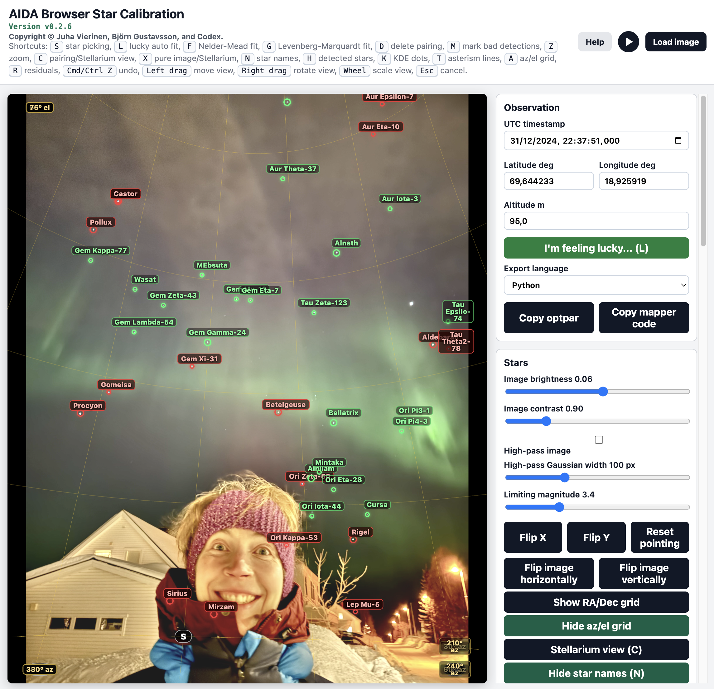

Generated from README.md. Edit the README and run npm run help:generate to update this page.
WISC - Widefield Star Calibrator

This repository contains WISC, the Widefield Star Calibrator. Its calibration, projection, robust fitting, coordinate conversion, and star-detection code is a platform-independent Rust library shared by a native wisc executable and a Rust/WebAssembly browser application. The browser renders the image and star overlay through WebGL2 and uses rustplotlib for calibration plots. JavaScript is limited to the small WebAssembly bootstrap needed by the browser.
The previous JavaScript calibrator remains in the repository while specialized workflows are validated against the shared Rust implementation. New production code belongs in wisc-core, wisc-cli, or wisc-web, rather than duplicating calibration mathematics in JavaScript.
Authors: Juha Vierinen and Björn Gustavsson. More authors can be added later. Merge requests are welcome!
Acknowledgements: The tool was inspired by the legendary aurora image data analysis (AIDA) MATLAB tools. This repository only implements the lens-model calibration parts needed by the browser and command-line calibrator. Original AIDA_tools MATLAB toolbox: https://github.com/jvierine/AIDA_tools. Thank you to Daniel Kastinen for suggesting making this a web page. The blind asterism-search ideas are also informed by astrometry.net. The star-detection experiments and reports were also informed by SExtractor and SEP. Codex is gratefully acknowledged for contributions to implementation and testing.
License: Creative Commons Attribution 4.0 International (CC BY 4.0). See LICENSE.md.
Try the hosted version here:
http://4.235.86.214/aida/

The browser application is client-side Rust/WebAssembly with a WebGL2 viewer. Build it and serve the checkout over HTTP (browsers do not load WebAssembly modules reliably from a file: URL):
git clone https://github.com/jvierine/widefield-star-calibrator.git
cd widefield-star-calibrator
rustup target add wasm32-unknown-unknown
cargo install wasm-bindgen-cli --version 0.2.129 --locked
scripts/build_web.sh
python3 -m http.server 8000
# open http://localhost:8000/web/Rust Browser Workflow
- Load a PNG, JPEG, HEIC/HEIF, or FITS image. FITS data retain their original floating-point intensity range for detection; the display texture is normalized separately.
- Import an existing
metadata.json,case.json, fit job, or Rust calibration result (JSON or Rust WISC HDF5). Imported pairs keep their measured image positions and saved azimuth/ zenith coordinates. The loader handles the legacy raw-pixel flip conversion. - For a new calibration, set UTC, latitude, longitude, model, focal lengths, and camera angles, then choose Apply camera settings and update catalogue. The bundled Tycho-2 magnitude-8 catalogue is decoded entirely in Rust.
- Select a catalogue star and click its image position. A nearby detection supplies its centroid. Shift-click removes the nearest measured pair.
- Fit pairs optimizes the current measurements. Match stars and fit expands associations from a roughly aligned model, preserving manual pairs. Find pointing with triangles can recover unknown pointing when focal lengths and distortion are approximately known. Triangle hypotheses must have support from additional projected stars before they are accepted.
- Inspect the rustplotlib residual plot, use Undo to restore a previous model or pairing set, and download the calibration JSON or two-plane az/el FITS map. A map sampling step of 1 includes every raw image pixel centre. Compact HDF5 saves the full-precision model, measurements, residuals, and re-importable JSON. The separate HDF5 map contains compressed float32 azimuth/elevation arrays at every pixel corner:
[height+1,width+1], from(-0.5,-0.5)to(width-0.5,height-0.5), suitable forpcolormesh. HDF5 map export always uses the full grid, independent of the FITS step.
Green rings show detections, orange rings show projected catalogue stars, and blue rings show measured pairs. Loading another image clears old pairings and observation metadata; FITS observation headers populate time/site controls when available. No image or calibration is uploaded by this Rust interface.
The Rust interface currently supports ground-based camera calibration. Spacecraft/ UV workflows, legacy HDF5 import and report bundles, and the legacy 40× KDE picker are still being ported. The sections below describing those features and keyboard shortcuts refer to the legacy root index.html interface.
Legacy Browser Reference
Hosted test cases can also have short quick links. Create or update one with:
npm run quicklink -- tc01 Sunniva_Alomar_23-03-2023_21-30UTThis writes quick_links.json and a small tc01/index.html redirect. After deployment, https://juha.no/aida/tc01 opens the browser GUI and loads the mapped saved test case. If a short name is not listed in quick_links.json, WISC tries to load a saved test case with that exact id.
DDR data policy disclaimer: all data goes directly to STASI main archives. Just kidding. Most calibration work is purely client-side WebAssembly. Images are not uploaded during ordinary viewing, star picking, fitting, or code export. If you click "Submit as test case", the browser uploads the currently loaded image and the current calibration metadata to the server. The stored metadata includes the test-case id, image filename, image dimensions, UTC timestamp, observer latitude, longitude and altitude, selected optical model and optpar, display/flip settings, marked bad star-finder detections/regions, residual summary, and the picked image-to-catalog star pairings with catalog names, coordinates, and magnitudes. On the hosted deployment these submitted test cases are stored on the server for testing and development of the calibrator.
Kudos to the person who finds all the easter eggs hidden in the GUI.
What It Does
- Fits optical models manually in the browser by picking image stars and pairing them with catalog stars.
- Fits optical models automatically with the
L/I'm feeling luckyworkflow, which detects stars, matches triangle asterisms, fits the selected lens model, expands to fainter stars, and prunes obvious bad automatic matches. - Loads PNG, JPEG, HEIC, HEIF, and FITS images.
- Loads a bundled iPhone HEIC example image automatically on startup.
- Reads UTC time and observer position from EXIF metadata when available.
- Falls back to known allsky7 filename/station metadata when possible.
- Uses the embedded bright-star catalog and AIDA camera projection code.
- Supports the self-contained parametric AIDA/MATLAB lens models (
optmod 1,2,3,4,5,6, and12) plus a Brown-Conrady radial/tangential distortion model under browseroptmod 20; the selected optical model is the one used by the fit. - Lets the user manually pick image stars with a 40x interpolated density estimate and pair them with catalog stars.
- Fits the model-specific
optparvector: eight parameters for AIDA radial models, and twelve for Brown-Conrady withk1,k2,k3,p1, andp2. - Copies the fitted
optpar, directly downloads the compact fit HDF5, and can download an HDF5 azimuth/elevation map for every image pixel. - Generates a ZIP report bundle with LaTeX source, star-overlay figures, residual plots, one base image, bare Python overlay scripts, and an optional script that creates the HDF5 az/el grid locally.
- Shows RGB images in color when the high-pass image display option is off.
- Provides residual inspection, including 20x exaggerated on-image residual vectors so subpixel offsets are visible.
- Includes pure image and pure Stellarium views for visual checking.
- Includes an optional generated ambient audio mode with subtle interaction feedback.
Views And Controls
C: toggle star pairing view and Stellarium-style catalog view.X: alternate pure image view and pure Stellarium view. Labels and pairings are hidden, but the az/el grid remains visible if enabled.N: show or hide star names in the current view.K: show only the picked KDE subpixel star positions.T: show or hide the lucky asterism line overlay.R: show or hide residual view.A: show or hide the az/el grid.D+ click: delete the nearest matched star pair.H: show or hide automatic star-detection markers.M+ click or drag: paint fast 128x128 black not-star mask tiles. Masked tiles are ignored by later star finding.Z: show the zoom/magnifier view.- Use the viewer's
-,Fit, and+controls for persistent image zoom up to 16x. The mouse wheel zooms around the pointer and dragging pans the image. HoldCmd/Ctrlwhile using the wheel or dragging to adjust the lens model. View zoom affects only display and never changes calibration pixels or report framing. Above 10x, black dots automatically mark the exact picked subpixel star positions while the green pairing circles remain visible. Cmd/Ctrl Z: undo the most recent accepted fit.Esc: cancel the current interaction or close the density popup.LorI'm feeling lucky...: run automatic star finding, asterism identification, and staged lens fitting for the currently selected optical model.
Manual KDE-based star picking remains the most controlled way to add or correct pairings after an automatic run.
Basic Workflow
- Open
index.htmlin a browser. - Load an image, or use the bundled default image.
- Check UTC time, latitude, longitude, and altitude.
- Select the optical model to fit: an AIDA radial model (
optmod 1,2,3,4,5,6, or12) or Brown-Conrady. - Roughly align the star field: hold
Cmd/Ctrland left-drag to move the zenith point, useCmd/Ctrl+ Shift-left-drag or right-drag to rotate the field, and useCmd/Ctrl+ mouse wheel to scalef1andf2together. - Click
I'm feeling lucky...or pressLto run the automatic detector, asterism matcher, and staged lens fit. Re-running it respects any masked image tiles. - To add or correct pairs manually, hold
Sand click an image star. The local star position is refined with the interpolated density estimate. ReleaseS, then click the matching red catalog star. - Repeat until several well-spread star pairs are available.
- Press
Ffor robust randomized Nelder-Mead, orGfor Levenberg-Marquardt. - Press
Rto inspect residuals and remove bad pairs if needed. - Export the fitted model with the copy buttons.
Field Of View Adjustment
The first alignment step is meant to be visual and approximate. Hold Cmd/Ctrl and drag with the left mouse button until the catalog zenith is near the image zenith. Keep Cmd/Ctrl held and Shift-drag with the left mouse button, or drag with the right mouse button, to rotate the star field so bright catalog stars line up with the image orientation. Use Cmd/Ctrl + mouse wheel if the projected catalog field is too wide or too narrow. After the field is close, use S to create accurate star pairs and let the lens optimizer refine the selected model parameters.
Star Picking Details
When S is held, a magnified view follows the mouse. Click near the image star; the magnifier disappears and a density-estimate popup is placed away from the click area. The selected star position is found from a 40x interpolated local image patch smoothed with a Gaussian kernel. On low-resolution images, the picker first searches for the nearby intensity peak so a one-pixel click error cannot bias the small KDE patch. The popup shows the unfiltered interpolated bitmap underneath contour lines of the smoothed density estimate.
Image-star coordinates use zero-based pixel centers: (0, 0) is the center of the upper-left pixel. Pixel-corner coordinates are used only by the separate pcolormesh-compatible az/el HDF5 grid.
Press K to inspect only the picked subpixel image-star positions. In this KDE-dot mode all other overlays are hidden, which is useful for checking whether centroiding is landing on the intended stars.
Residuals And Undo
Residual mode draws the fitted catalog location and the selected image location for each pair. The suggested removal marker is based on the star whose residual is furthest from the main residual pattern, rather than simply the largest absolute residual.
Accepted fits and automatic pairing batches are stored in an undo stack. Use the Undo button or Cmd/Ctrl Z to restore the state from before the latest accepted fit or automatic pairing run. Loading a new image or removing all star pairings clears the undo history.
Native Rust Command-Line Calibration
To build and install the native wisc executable, clone the repository and run:
git clone https://github.com/jvierine/widefield-star-calibrator.git
cd widefield-star-calibrator
scripts/install.shThe installer compiles an optimized Rust binary and copies it to ~/.local/bin by default. Set PREFIX=/usr/local or BINDIR=/some/bin before running the script to choose another install location. Node.js is not required.
Fit identified image/sky pairs from a JSON job. The native executable calls the same wisc-core fitter and projection functions as the WebAssembly UI:
wisc fit fit-job.json --output calibration.json --residual-plot residuals.pdfThe fit job has this schema (angles are radians and image coordinates are zero-based pixel centres):
{
"initial": {
"width": 1024,
"height": 768,
"model": 2,
"optpar": [1.0, 1.333333, 0.0, 0.0, 0.0, 0.0, 0.0, 0.35]
},
"pairs": [
{"azimuth_rad": 0.4, "zenith_rad": 0.7, "x_px": 522.1, "y_px": 281.8}
]
}The output contains the fitted calibration, RMS, iteration count, and residual vector for every pair. A requested PDF, SVG, PNG, or JPEG residual figure is rendered by rustplotlib. wisc project calibration.json samples.json projects an array of azimuth/zenith samples through an existing calibration.
The same Rust detector used by the WebAssembly viewer is available from the native executable:
wisc detect image.jpg --output detections.json --threshold-sigma 5FITS images and stacks use the same decoder as the browser, including unsigned scaling, missing-data handling, and the legacy 16-bit byte-order heuristic. Use --fits-byte-order big or --fits-byte-order little on detect/solve to override that heuristic. The browser has the same selection before loading.
Automatic association and lens fitting can run on an image using a saved initial model and its time/site metadata:
wisc solve image.fits --initial saved-case.json --output calibration.json
wisc solve image.fits --initial initial-model.json --triangles --output calibration.json
wisc map calibration.json --output azel.fits --step 1
wisc fit saved-case.json --output calibration.h5
wisc map calibration.h5 --output azel.h5 --step 1--triangles searches camera pointing without a roughly aligned attitude; focal lengths and lens distortion must still be approximately known. Both matchers retain the identified pairs supplied in the initial job. The solve command requires image dimensions to match the calibration and exits unsuccessfully when it cannot obtain a reliable match. Pipelines must check its exit status; failed solves do not write a new result.
The FITS map contains separate azimuth and elevation planes in degrees. Invalid inverse projections are NaN. CDELT1 and CDELT2 record the requested raw-pixel sampling step. wisc project and wisc fit accept the downloaded Rust result directly, so the result can be reused without extracting an inner JSON object.
Rust calibration objects store model separately from optpar. The optical model number is included at the front of the array only in legacy exports.
Export Notes
The copied optpar array always starts with the optical model number. For AIDA radial models it contains [optmod, f1, f2, alpha, beta, gamma, du, dv, radial_alpha]. For Brown-Conrady (optmod 20), it contains [20, f1, f2, alpha, beta, gamma, du, dv, k1, k2, k3, p1, p2].
Lens parameters always map directly to raw, zero-based image pixel centers and never depend on GUI flip state. Flip model X negates only f1; Flip model Y negates only f2. Image-flip controls affect display only. Legacy saved cases with external overlay flips are converted once on load to equivalent raw-pixel parameters; new test cases and HDF5 products record modelCoordinates = raw_image_pixel_centers.
An existing server-side test-case directory can be migrated without refitting:
node tools/migrate_legacy_test_case_flips.js /path/to/test-cases --writeThe migration is algebraic and writes a .pre-raw-pixel-model backup beside each changed metadata.json file.
The export language selector controls the syntax used by Copy optpar: Python, Julia, C, or MATLAB. The results ZIP still includes the complete self-contained Python mapper for the fitted model.
The Download az/el HDF5 button writes a browser-generated HDF5 file with /azimuth_deg and /elevation_deg Float32 datasets shaped [image_height + 1, image_width + 1] and indexed as [corner_y, corner_x]. Values describe pixel corners from (-0.5, -0.5) to (image_width - 0.5, image_height - 0.5), making the arrays directly compatible with pcolormesh image data. The root attributes store the image name, image and coordinate-grid sizes, UTC timestamp, site latitude/longitude/altitude, selected optical model, optpar, [optmod, ...optpar], corner origin/step, and overlay/image flip flags used for the export.
The Download results button packages report.tex, star-overlay and residual figures, a single root-level base_image.png, and Yale Bright Star Catalogue rows embedded directly in root-level Python examples. The ZIP is named <image-prefix>_results.zip. It also includes <image-prefix>_calibration.h5, the authoritative compact calibration product. It stores the best native AIDA/WISC optmod/optpar, equidistant and equisolid MIRACLE compatibility fits, center offsets, per-model pixel/angular error statistics and residuals, and the complete selected-star table with an included_in_fit flag (the same data is also provided in selected_stars.tsv). Dataset names and root attributes document every column and unit. The ZIP includes working read_calibration_hdf5.py and read_calibration_hdf5.m examples for all three models, plus wisc_mapper.py for the recommended native fit. It also includes evaluate_miracle_error.py; it reads this HDF5 file and evaluates the absolute angular difference between the native WISC fit and MIRACLE approximation at a specified 1-based image row/column or over a sampled image-aligned grid.
The Download fit HDF5 button downloads the same authoritative <image-prefix>_calibration.h5 product directly, without building the report ZIP.
The results ZIP also contains <image-prefix>.miracle, a plain ASCII file. Its first commented header and numeric row contain the backward-compatible equidistant Glat Glon Xc Yc k_equdist rotAngle parameters. A second commented header and numeric row contain the equisolid Glat Glon Xc Yc k_equisolid a p rotAngle RMS values for the simple d = k_equisolid sin(0.5 z_rad) model, with a = 0.5 and p = 0 fixed. No generalized k sin(a z) + p model is fitted. Glat and Glon are station geographic coordinates in degrees. MIRACLE's historical image axes are intentionally twisted: Xc is the 1-based vertical coordinate (zenithRow) and Yc is the 1-based horizontal coordinate (zenithCol), with (1, 1) at the upper-left. k_equdist is in pixels per degree for d = k_equdist z_degree; k_equisolid is in pixels for d = k_equisolid sin(z_rad/2); rotAngle is in radians; and RMS is the two-dimensional selected-star residual RMS in pixels. A positive angle means rotating the image clockwise aligns north upward, equivalently the uncorrected image is rotated counter-clockwise. Additional % comment lines summarize both fits and their residual errors. The legacy equidistant row remains the first numeric row.
WISC fits the MIRACLE camera parameters directly from selected-star row/column positions using the unmirrored east-left projection in the MIRACLE starcalibration function. selected_stars.tsv provides every selected star with altitude_deg, azimuth_deg, star_row_px_1based, and star_col_px_1based columns that map directly to MATLAB starAlt, starAz, starRow, and starCol, plus J2000 RA/Dec, magnitude, modeled position, and residual. The report includes a three-column equidistant/equisolid/native-AIDA comparison table using the stars included by the current GUI magnitude limit, so the native pixel RMS matches the GUI, including center offsets, pixel and angular RMS/standard deviations, and the approximate transverse error at 150 km. It also includes figures/miracle_absolute_angular_error.png, a pcolormesh-style bitmap of the absolute sky-angle difference in degrees between the native WISC model and the six-parameter MIRACLE approximation. The image-aligned heatmap preserves the source aspect ratio and is capped at 512 pixels on its longest side.
overlay_lens_model.py has the optpar, site/time, image size, and star rows in the code. create_az_el_table.py optionally creates calibration_az_el.h5 locally; overlay_hdf5.py reads that file after it has been created. The HDF5 az/el corner grid is not bundled in the ZIP because it can be much larger than the compact calibration HDF5. The examples use Astropy for RA/Dec to azimuth/elevation, draw hollow yellow circles on base_image.png, and write a PNG in the same folder. The examples do not read JSON metadata, residual, or catalog files. Compile report.tex after unzipping with pdflatex or latexmk.
Python Lens Module
The repository also includes a reusable Python module, wisc_lens.py, which implements all browser lens models. This is useful when you want to write a normal Python program instead of pasting the complete mapper code from the GUI. It can be installed as a tiny module:
python setup.py installor copied directly into the same directory as a Python script. It only depends on NumPy. The module uses the same optpar convention as the GUI export: the first value is the optical model number.
from wisc_lens import WiscCamera, az_el_to_pixel, pixel_to_az_el
optpar = [20, -0.93, -0.70, -12.1, -58.9, -15.2,
0.006, 0.004, 0.24, -0.30, -0.03, -0.013, 0.004]
width = 3024
height = 4032
camera = WiscCamera(optpar, width, height)
x, y = camera.az_el_to_pixel(az_deg=210.0, el_deg=45.0)
az, el = camera.pixel_to_az_el(x, y)
# Functional API:
x, y = az_el_to_pixel(210.0, 45.0, optpar, width, height)
az, el = pixel_to_az_el(x, y, optpar, width, height)pixel_to_az_el is a numerical inverse intended for calibrated pixels inside the useful field of view. Pass return_error=True to also get the residual reprojection error in pixels.
Rust, WebAssembly, And WebGL
crates/wisc-core contains portable calibration algorithms and has no browser dependency. crates/wisc-cli is the native command-line executable. crates/wisc-web binds the same library to browser events, decodes PNG/JPEG/HEIC/FITS in Rust, and renders with WebGL2. Browser plots use rustplotlib-web; native plots use rustplotlib. This keeps numerical behaviour common across both targets and confines JavaScript to web/bootstrap.js.
HEIC/HEIF uses the pure Rust heic-rs decoder with threading disabled for the shared WASM target. The tiled 4032×3024 iPhone fixture is checked against its existing PNG reference for dimensions, orientation, and spatial luminance.
The scientific Python-to-Rust mapping is deliberate:
| Python role | Rust crate |
|---|---|
| NumPy multidimensional arrays, views, slicing, and broadcasting | ndarray |
| Large dense matrix solves, SVD, QR, and eigensolvers | faer |
| Fixed-size vectors, matrices, rotations, and camera geometry | nalgebra |
| SciPy-style optimization, integration, interpolation, statistics, and signal processing | SciRS2 (scirs2) |
The portable core already uses ndarray for image views and nalgebra for camera rotations. faer is reserved for genuinely large linear systems; scirs2 modules replace bespoke numerical routines where their WebAssembly support and numerical behaviour are covered by WISC cross-target tests.
Coordinates And Camera Models
For a catalog star at azimuth $\mathrm{az}$ and zenith angle $\mathrm{ze}$, WISC first writes the local sky direction as an east/north/up unit vector:
The camera pointing parameters rotate this direction into the camera frame:
The final image coordinates are normalized coordinates multiplied by image size:
where $W$ and $H$ are the image width and height in pixels.
For the radial AIDA-style models, define
At the optical axis, where $\rho = 0$, WISC uses $u = \frac{1}{2} + d_x$ and $v = \frac{1}{2} + d_y$.
The AIDA radial models are based on tried-and-true, robust lens models from the original AIDA_tools MATLAB code, where they have been used on a range of wide-field and all-sky lenses. The GUI exposes these options, with the radial function $q(\theta)$ defined as:
optmod 1: rectilinear/pinhole projection: $u = \frac{1}{2} + d_x + f_1s_1/s_3$ and $v = \frac{1}{2} + d_y + f_2s_2/s_3$.optmod 2: sinusoidal radial projection: $q(\theta) = \sin(a\theta)$. This is often useful for fisheye and all-sky lenses.optmod 3: hybrid rectilinear/equidistant projection: $p_x = (1-a)s_1/s_3 + a\theta s_1/\rho$ and $p_y = (1-a)s_2/s_3 + a\theta s_2/\rho$.optmod 4: power-law equidistant-style projection: $q(\theta) = \lvert \theta \rvert^a$.optmod 5: scaled rectilinear projection: $q(\theta) = \tan(a\theta)$.optmod 6: simple equisolid projection: $q(\theta) = \sin(\theta/2)$.optmod 12: unified radial projection: $q(\theta)=\tan(a\theta)/a$ for $a>0$, $q(\theta)=\theta$ for $a=0$, and $q(\theta)=\sin(a\theta)/a$ for $a<0$.optmod 20: Brown-Conrady radial/tangential distortion model. This is usually a good starting point for ordinary phone-camera lenses, including iPhone images.
For Brown-Conrady, the undistorted pinhole coordinates are
The distorted normalized coordinates are
Tests
Run all Rust unit tests, lints, formatting checks, and the WebAssembly build:
cargo fmt --all --check
cargo test --locked --workspace
cargo clippy --locked --workspace --all-targets -- -D warnings
cargo build --locked --release -p wisc-web --target wasm32-unknown-unknownThe legacy JavaScript cross-checks remain available with npm test while the specialized reports are being validated. GitHub Actions runs both suites plus the native CLI and WebAssembly builds on every pushed commit and pull request. CI also runs every optional real-image, blind-match, and sensitivity regression, with no test skips. Reproduce the full compatibility gate locally with:
PYTHON=python3 npm run test:allThe sensitivity sweeps take several minutes. Generated diagnostic reports write into ignored directories such as test-report/, lucky-report/, and test_cases/report/.
To independently check the two low-resolution BACC_* cases, first load each case in WISC and click Download az/el HDF5. Then run:
conda run -n base python tools/verify_bacc_astropy_hdf5.pyThe script downloads the saved images and J2000 catalog coordinates, calculates unrefracted apparent azimuth/elevation with Astropy, and numerically inverts the downloaded [height + 1, width + 1] pixel-edge grids. It does not import the WISC/AIDA lens mapper. The command fails if either fit exceeds its expected RMS, if the grid inversion is inaccurate, or if the mean x/y residual indicates a pixel-indexing offset. It writes full-frame high-pass overlays, pixel-resolved montages of every selected-star cutout, and a detailed HDF5 result to test-report/bacc-astropy-hdf5/. The high-pass and contrast stretch are only used for display; calculations use the original coordinates and az/el grid. Use repeated --grid CASE_ID=/path/to/file.h5 options if the downloads are elsewhere.
A shorter direct check of the Python WISC library is available as:
conda run -n base python tools/check_bacc_pixel2azel.pyIt reads the two tracked BACC images and test-case JSON files, explicitly separates the saved optmod = optpar[0] from the remaining parameters, runs wisc_lens.pixel2azel on the selected zero-based pixel centers, compares the result with Astropy, and plots the selected and predicted pixel centers. There is no fitting or HDF5 inversion in this test. Integer coordinates are displayed at image pixel centers using an image extent from -0.5 to size - 0.5.
The camera-model cross-check starts Python and imports this repository's wisc_lens module; no sibling checkout is needed. Set PYTHON=/path/to/python to select an environment with NumPy, SciPy, Astropy, and h5py installed.
References
- Warren Jr., W. H., and Hoffleit, D. (1987). The Bright Star Catalogue. Bulletin of the American Astronomical Society, 19, 733.
- Nowakowski, A., and Skarbek, W. (2013). Analysis of Brown camera distortion model. In Photonics Applications in Astronomy, Communications, Industry, and High-Energy Physics Experiments 2013, SPIE Vol. 8903, 248-257.
- Lang, D., Hogg, D. W., Mierle, K., Blanton, M., and Roweis, S. (2010). Astrometry.net: Blind astrometric calibration of arbitrary astronomical images. The Astronomical Journal, 139(5), 1782-1800.
- Bertin, E., and Arnouts, S. (1996). SExtractor: Software for source extraction. Astronomy and Astrophysics Supplement Series, 117, 393-404. doi:10.1051/aas:1996164.
- Barbary, K. (2016). SEP: Source Extractor as a library. Journal of Open Source Software, 1(6), 58. Project documentation: https://sep.readthedocs.io/.